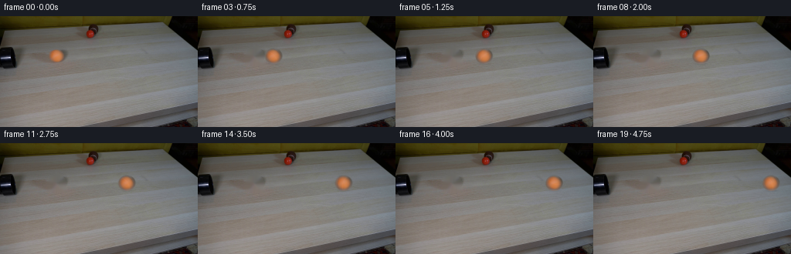
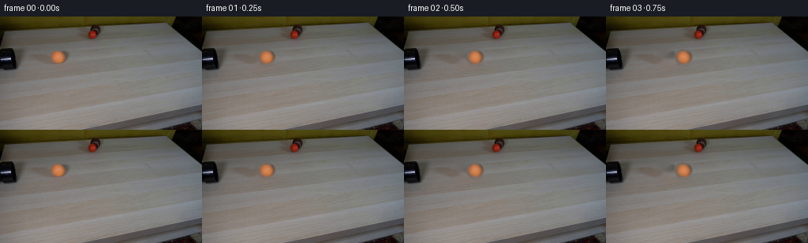

CODING AGENTS AS PIXEL WORLD MODELS
traex/GPT-5.6-Sol · 0010
点击播放 · 原生 RGB 像素
逐轮保存的候选
回放视频、检查图与代码变化。
每份候选均可单独播放。实际图片检查记录在下方工具轨迹中。
候选 01播放与检查图
点击播放 · 原生 RGB 像素


展开代码变化
--- 上一保存版本
+++ 本次保存版本
@@ -0,0 +1,147 @@
+"""Generate the locked-camera rolling-ball demonstration.
+
+Only the supplied first frame is used. The static plate is retained exactly;
+the initial tennis ball is removed locally and then re-composited along a
+constant-velocity path. Its illumination stays fixed in screen space while
+small surface detail rotates, as it should for a rolling sphere.
+"""
+from pathlib import Path
+
+import cv2
+import numpy as np
+from PIL import Image
+
+import artifact_io
+
+
+HERE = Path(__file__).resolve().parent
+H, W = 144, 256
+N = 20
+
+
+def smoothstep(a, b, x):
+ t = np.clip((x - a) / (b - a), 0.0, 1.0)
+ return t * t * (3.0 - 2.0 * t)
+
+
+def bilinear_sample(image, x, y):
+ """Bilinear RGB sampling with reflected borders."""
+ return cv2.remap(
+ image.astype(np.float32), x.astype(np.float32), y.astype(np.float32),
+ interpolation=cv2.INTER_LINEAR, borderMode=cv2.BORDER_REFLECT_101
+ )
+
+
+def build_clean_plate(first):
+ """Remove only the original tennis ball and its tiny contact shadow."""
+ yy, xx = np.mgrid[:H, :W].astype(np.float32)
+ # Main sphere plus its soft, very shallow contact shadow. The generous
+ # feather-sized mask keeps orange edge contamination out of the fill.
+ sphere = ((xx - 73.0) / 12.5) ** 2 + ((yy - 51.4) / 11.6) ** 2 < 1.0
+ contact = ((xx - 73.5) / 13.0) ** 2 + ((yy - 60.0) / 4.0) ** 2 < 1.0
+ mask = ((sphere | contact).astype(np.uint8) * 255)
+ # NS propagation follows the gentle table gradients and grain better than
+ # a flat colour fill. All pixels away from this small mask remain exact.
+ clean = cv2.inpaint(first, mask, 3.0, cv2.INPAINT_NS)
+ return clean.astype(np.uint8)
+
+
+def prepare_ball(first):
+ """Prepare fixed illumination and rollable high-frequency detail."""
+ cx, cy = 73.0, 51.4
+ yy, xx = np.mgrid[:H, :W].astype(np.float32)
+ u, v = xx - cx, yy - cy
+ rho = np.sqrt((u / 11.35) ** 2 + (v / 10.45) ** 2)
+ # Interior opaque, narrow antialiased/fuzzy rim. Source edge pixels
+ # already carry photographic antialiasing, so this feather is restrained.
+ alpha = 1.0 - smoothstep(0.91, 1.055, rho)
+ alpha[rho >= 1.055] = 0.0
+
+ # Blur only to separate subtle felt/nap detail from stable large-scale
+ # directional lighting. Detail will rotate; highlights will not.
+ soft = cv2.GaussianBlur(first.astype(np.float32), (0, 0), 1.15)
+ detail = first.astype(np.float32) - soft
+ return alpha.astype(np.float32), soft, detail
+
+
+def composite_ball(frame, clean, first, alpha_src, soft_src, detail_src,
+ cx, cy, distance):
+ """Composite one physically grounded rolling sphere and its shadow."""
+ yy, xx = np.mgrid[:H, :W].astype(np.float32)
+ u = xx - cx
+ v = yy - cy
+
+ # A ball rolling right turns clockwise in image coordinates. We rotate
+ # just its fine felt/marking component by s/r, not the fixed illumination.
+ radius = 10.8
+ theta = distance / radius
+ ct, st = np.cos(theta), np.sin(theta)
+
+ # Coordinates in the original ball patch for fixed sphere illumination.
+ sx_fixed = u + 73.0
+ sy_fixed = v + 51.4
+ fixed = bilinear_sample(soft_src, sx_fixed, sy_fixed)
+ a = cv2.remap(alpha_src, sx_fixed.astype(np.float32), sy_fixed.astype(np.float32),
+ cv2.INTER_LINEAR, borderMode=cv2.BORDER_CONSTANT,
+ borderValue=0).astype(np.float32)
+
+ # Inverse clockwise rotation for the texture samples.
+ ur = ct * u - st * v
+ vr = st * u + ct * v
+ sx_detail = ur + 73.0
+ sy_detail = vr + 51.4
+ rolling_detail = bilinear_sample(detail_src, sx_detail, sy_detail)
+
+ ball_rgb = np.clip(fixed + 0.78 * rolling_detail, 0, 255)
+
+ # A low-contrast curved felt seam gives a readable cue to rotation while
+ # remaining consistent with the worn, brown-orange tennis-ball appearance.
+ # It rotates with the material and is attenuated toward the silhouette.
+ seam_coord = vr + 0.032 * ur * ur - 1.1
+ seam = np.exp(-0.5 * (seam_coord / 0.48) ** 2)
+ seam *= (np.abs(ur) < 8.5) * (np.sqrt((u/11.35)**2 + (v/10.45)**2) < .90)
+ seam_strength = (3.2 * seam * a)[..., None]
+ ball_rgb = np.clip(ball_rgb + seam_strength * np.array([1.0, 0.80, 0.55]), 0, 255)
+
+ # Soft shadow/contact patch: fixed relative to the ball and light source.
+ # It is intentionally subtle because the supplied tabletop is evenly lit.
+ shx = (xx - (cx + 0.3)) / 10.8
+ shy = (yy - (cy + 9.6)) / 2.25
+ shadow = np.exp(-2.3 * (shx * shx + shy * shy))
+ # Keep the shadow from darkening pixels behind the opaque sphere.
+ shadow *= (1.0 - 0.80 * a)
+ base = frame.astype(np.float32)
+ base *= (1.0 - (0.105 * shadow)[..., None])
+
+ out = base * (1.0 - a[..., None]) + ball_rgb * a[..., None]
+ return np.clip(np.rint(out), 0, 255).astype(np.uint8)
+
+
+def generate():
+ first = np.asarray(Image.open(HERE / "first_frame.png").convert("RGB"),
+ dtype=np.uint8)
+ if first.shape != (H, W, 3):
+ raise ValueError(f"unexpected first-frame shape: {first.shape}")
+
+ clean = build_clean_plate(first)
+ alpha, soft, detail = prepare_ball(first)
+
+ frames = [first.copy()] # Contract: frame 00 is byte-for-byte identical.
+ x0, y0 = 73.0, 51.4
+ # Constant real-time velocity: 8.25 pixels per 1/4-second frame. At the
+ # final frame the ball has traversed the visible tabletop to the right.
+ speed_per_frame = 8.25
+ for i in range(1, N):
+ distance = speed_per_frame * i
+ cx = x0 + distance
+ frame = composite_ball(clean.copy(), clean, first, alpha, soft, detail,
+ cx, y0, distance)
+ frames.append(frame)
+
+ frames = np.stack(frames).astype(np.uint8)
+ artifact_io.save(frames, HERE)
+ return frames
+
+
+if __name__ == "__main__":
+ generate()
可观测工具轨迹
实际执行的命令与返回图片。
命令 1exit 0
/bin/bash -lc "cat prompt.txt && printf '\\n--- GENERATION_RULES ---\\n' && cat GENERATION_RULES.md"
命令 2exit 127
/bin/bash -lc "find . -maxdepth 2 -type f -printf '%p\\n' | sort && printf '\\n--- file info ---\\n' && file first_frame.png"
命令 3exit 0
/bin/bash -lc "python3 - <<'PY'
from PIL import Image
import numpy as np
im=np.array(Image.open('first_frame.png').convert('RGB'))
print(im.shape,im.dtype,im.min(),im.max())
# row/column mean and std ranges
for y in [0,10,20,30,40,50,60,70,80,90,100,110,120,130,143]:
a=im[y]; print('row',y,'mean',np.round(a.mean(0),1),'std',np.round(a.std(0),1))
print('cols')
for x in [0,20,40,60,80,100,120,140,160,180,200,220,240,255]:
a=im[:,x]; print('col',x,'mean',np.round(a.mean(0),1),'std',np.round(a.std(0),1))
# dominant quantized colors
q=(im//16)*16
u,c=np.unique(q.reshape(-1,3),axis=0,return_counts=True)
for i in np.argsort(c)[-30:][::-1]: print(c[i],u[i])
PY"命令 4exit 0
/bin/bash -lc "python3 - <<'PY'
import cv2, numpy as np
im=cv2.imread('first_frame.png')[:,:,::-1]
R,G,B=np.moveaxis(im,2,0)
ms={
'black':(R<30)&(G<30)&(B<30),
'dark':(R<50)&(G<50)&(B<50),
'redstrong':(R>70)&(R>G*1.35)&(R>B*1.25),
'red':(R>60)&(R>G*1.18)&(R>B*1.12),
'orange':(R>70)&(R>G*1.15)&(G>B*1.2),
'yellow':(R>60)&(G>45)&(B<40)&(R>G*1.05),
'sat':np.max(im,2)-np.min(im,2)>40,
}
for name,m in ms.items():
n,l,st,cent=cv2.connectedComponentsWithStats(m.astype('uint8'),8)
print('\\n',name,'total',m.sum())
ids=sorted(range(1,n),key=lambda i:st[i,4],reverse=True)[:20]
for i in ids:
x,y,w,h,a=st[i];
if a>=3: print(a,(x,y,w,h),np.round(cent[i],1))
PY"命令 5exit 0
/bin/bash -lc "python3 - <<'PY'
from PIL import Image
import numpy as np
I=np.array(Image.open('first_frame.png').convert('RGB'))
# mean 8x8 blocks, encode luminance and chroma class (R red/orange, K black, g gray, y yellow/brown)
for y in range(0,144,4):
s=''
for x in range(0,256,4):
a=I[y:y+4,x:x+4].mean((0,1)); r,g,b=a; v=a.mean(); d=max(a)-min(a)
if v<25:c='K'
elif v<50:c='k'
elif r>g*1.28 and r>b*1.3:c='R'
elif r>g*1.08 and g>b*1.25:c='O'
elif d>25 and r>g and g>b:c='Y'
elif v<80:c='d'
elif v<110:c='m'
elif v<135:c='l'
elif v<165:c='p'
else:c='W'
s+=c
print(f'{y:03}',s)
PY"命令 6exit 0
/bin/bash -lc "python3 - <<'PY'
from PIL import Image
import numpy as np
I=np.array(Image.open('first_frame.png').convert('RGB'))
# print RGB / luminance grid ball crop sampled 2px
for y in range(38,66,2):
print('y',y, end=' ')
for x in range(56,91,2):
r,g,b=I[y:y+2,x:x+2].mean((0,1));
# chroma signed and lum
print(f'{r:03.0f}/{g:02.0f}/{b:02.0f}',end=' ')
print()
print('\\nred object')
for y in range(14,33,2):
print('y',y, end=' ')
for x in range(105,128,2):
r,g,b=I[y:y+2,x:x+2].mean((0,1)); print(f'{r:03.0f}/{g:02.0f}/{b:02.0f}',end=' ')
print()
PY"命令 7exit 0
/bin/bash -lc "sed -n '1,240p' artifact_io.py"
命令 8exit 0
/bin/bash -lc "cat > .tmp/test_inpaint.py <<'PY'
import cv2, numpy as np
from PIL import Image
I=np.array(Image.open('first_frame.png').convert('RGB'))
h,w=I.shape[:2]
def mask(cx,cy):
y,x=np.mgrid[:h,:w]; return (((x-cx)/11)**2+((y-cy)/10)**2<=1).astype(np.uint8)*255
for cx in [95,145,180,200]:
m=mask(cx,52)
for meth,n in [(cv2.INPAINT_TELEA,'t'),(cv2.INPAINT_NS,'n')]:
for rad in [2,3,5,8]:
O=cv2.inpaint(I,m,rad,meth)
d=np.abs(O.astype(float)-I)[m>0]
print(cx,n,rad,'mae',d.mean(),'p95',np.percentile(d,95),'max',d.max())
PY
python3 .tmp/test_inpaint.py"命令 9exit 0
/bin/bash -lc "cat > generate.py <<'PY'
\"\"\"Generate the locked-camera rolling-ball demonstration.
Only the supplied first frame is used. The static plate is retained exactly;
the initial tennis ball is removed locally and then re-composited along a
constant-velocity path. Its illumination stays fixed in screen space while
small surface detail rotates, as it should for a rolling sphere.
\"\"\"
from pathlib import Path
import cv2
import numpy as np
from PIL import Image
import artifact_io
HERE = Path(__file__).resolve().parent
H, W = 144, 256
N = 20
def smoothstep(a, b, x):
t = np.clip((x - a) / (b - a), 0.0, 1.0)
return t * t * (3.0 - 2.0 * t)
def bilinear_sample(image, x, y):
\"\"\"Bilinear RGB sampling with reflected borders.\"\"\"
return cv2.remap(
image.astype(np.float32), x.astype(np.float32), y.astype(np.float32),
interpolation=cv2.INTER_LINEAR, borderMode=cv2.BORDER_REFLECT_101
)
def build_clean_plate(first):
\"\"\"Remove only the original tennis ball and its tiny contact shadow.\"\"\"
yy, xx = np.mgrid[:H, :W].astype(np.float32)
# Main sphere plus its soft, very shallow contact shadow. The generous
# feather-sized mask keeps orange edge contamination out of the fill.
sphere = ((xx - 73.0) / 12.5) ** 2 + ((yy - 51.4) / 11.6) ** 2 < 1.0
contact = ((xx - 73.5) / 13.0) ** 2 + ((yy - 60.0) / 4.0) ** 2 < 1.0
mask = ((sphere | contact).astype(np.uint8) * 255)
# NS propagation follows the gentle table gradients and grain better than
# a flat colour fill. All pixels away from this small mask remain exact.
clean = cv2.inpaint(first, mask, 3.0, cv2.INPAINT_NS)
return clean.astype(np.uint8)
def prepare_ball(first):
\"\"\"Prepare fixed illumination and rollable high-frequency detail.\"\"\"
cx, cy = 73.0, 51.4
yy, xx = np.mgrid[:H, :W].astype(np.float32)
u, v = xx - cx, yy - cy
rho = np.sqrt((u / 11.35) ** 2 + (v / 10.45) ** 2)
# Interior opaque, narrow antialiased/fuzzy rim. Source edge pixels
# already carry photographic antialiasing, so this feather is restrained.
alpha = 1.0 - smoothstep(0.91, 1.055, rho)
alpha[rho >= 1.055] = 0.0
# Blur only to separate subtle felt/nap detail from stable large-scale
# directional lighting. Detail will rotate; highlights will not.
soft = cv2.GaussianBlur(first.astype(np.float32), (0, 0), 1.15)
detail = first.astype(np.float32) - soft
return alpha.astype(np.float32), soft, detail
def composite_ball(frame, clean, first, alpha_src, soft_src, detail_src,
cx, cy, distance):
\"\"\"Composite one physically grounded rolling sphere and its shadow.\"\"\"
yy, xx = np.mgrid[:H, :W].astype(np.float32)
u = xx - cx
v = yy - cy
# A ball rolling right turns clockwise in image coordinates. We rotate
# just its fine felt/marking component by s/r, not the fixed illumination.
radius = 10.8
theta = distance / radius
ct, st = np.cos(theta), np.sin(theta)
# Coordinates in the original ball patch for fixed sphere illumination.
sx_fixed = u + 73.0
sy_fixed = v + 51.4
fixed = bilinear_sample(soft_src, sx_fixed, sy_fixed)
a = cv2.remap(alpha_src, sx_fixed.astype(np.float32), sy_fixed.astype(np.float32),
cv2.INTER_LINEAR, borderMode=cv2.BORDER_CONSTANT,
borderValue=0).astype(np.float32)
# Inverse clockwise rotation for the texture samples.
ur = ct * u - st * v
vr = st * u + ct * v
sx_detail = ur + 73.0
sy_detail = vr + 51.4
rolling_detail = bilinear_sample(detail_src, sx_detail, sy_detail)
ball_rgb = np.clip(fixed + 0.78 * rolling_detail, 0, 255)
# A low-contrast curved felt seam gives a readable cue to rotation while
# remaining consistent with the worn, brown-orange tennis-ball appearance.
# It rotates with the material and is attenuated toward the silhouette.
seam_coord = vr + 0.032 * ur * ur - 1.1
seam = np.exp(-0.5 * (seam_coord / 0.48) ** 2)
seam *= (np.abs(ur) < 8.5) * (np.sqrt((u/11.35)**2 + (v/10.45)**2) < .90)
seam_strength = (3.2 * seam * a)[..., None]
ball_rgb = np.clip(ball_rgb + seam_strength * np.array([1.0, 0.80, 0.55]), 0, 255)
# Soft shadow/contact patch: fixed relative to the ball and light source.
# It is intentionally subtle because the supplied tabletop is evenly lit.
shx = (xx - (cx + 0.3)) / 10.8
shy = (yy - (cy + 9.6)) / 2.25
shadow = np.exp(-2.3 * (shx * shx + shy * shy))
# Keep the shadow from darkening pixels behind the opaque sphere.
shadow *= (1.0 - 0.80 * a)
base = frame.astype(np.float32)
base *= (1.0 - (0.105 * shadow)[..., None])
out = base * (1.0 - a[..., None]) + ball_rgb * a[..., None]
return np.clip(np.rint(out), 0, 255).astype(np.uint8)
def generate():
first = np.asarray(Image.open(HERE / \"first_frame.png\").convert(\"RGB\"),
dtype=np.uint8)
if first.shape "'!= (H, W, 3):
raise ValueError(f"unexpected first-frame shape: {first.shape}")
clean = build_clean_plate(first)
alpha, soft, detail = prepare_ball(first)
frames = [first.copy()] # Contract: frame 00 is byte-for-byte identical.
x0, y0 = 73.0, 51.4
# Constant real-time velocity: 8.25 pixels per 1/4-second frame. At the
# final frame the ball has traversed the visible tabletop to the right.
speed_per_frame = 8.25
for i in range(1, N):
distance = speed_per_frame * i
cx = x0 + distance
frame = composite_ball(clean.copy(), clean, first, alpha, soft, detail,
cx, y0, distance)
frames.append(frame)
frames = np.stack(frames).astype(np.uint8)
artifact_io.save(frames, HERE)
return frames
if __name__ == "__main__":
generate()
PY
python3 generate.py
python3 - <<'"'PY'
from pathlib import Path
from PIL import Image
import numpy as np
z=np.load('pixels.npz')['pixels']
frames=np.stack([np.array(Image.open(f'frames/{i:02d}.png')) for i in range(20)])
first=np.array(Image.open('first_frame.png').convert('RGB'))
print('frames',frames.shape,frames.dtype,'first exact',np.array_equal(frames[0],first))
print('packed',z.shape,z.dtype)
print('changed pixels/frame',[(np.any(frames[i]"'!=frames[i-1],2)).sum() for i in range(1,20)])
print('"'outputs',[(p.name,p.stat().st_size) for p in map(Path,['pixels.npz','inspection.png','transition_check.png','index.html'])])
PY"命令 10exit 0
/bin/bash -lc "python3 - <<'PY'
from PIL import Image
import numpy as np, hashlib, subprocess
def digest(p): return hashlib.sha256(open(p,'rb').read()).hexdigest()
h1=digest('pixels.npz')
subprocess.run(['python3','generate.py'],check=True)
h2=digest('pixels.npz')
F=np.stack([np.array(Image.open(f'frames/{i:02d}.png').convert('RGB')) for i in range(20)])
I=np.array(Image.open('first_frame.png').convert('RGB'))
# Approximate chromatic-ball centroid; region is restricted around expected track.
cent=[]
for i,f in enumerate(F):
yy,xx=np.mgrid[:144,:256]
m=(yy>=38)&(yy<=64)&(xx>=55)&(xx<=250)&(f[:,:,0]>130)&(f[:,:,0]>f[:,:,1]*1.25)&(f[:,:,1]>f[:,:,2]*1.25)
cent.append(round(float(xx[m].mean()),2) if m.any() else None)
# Verify red ball remains unchanged after frame 0.
red_static=all(np.array_equal(F[i,14:34,105:128],I[14:34,105:128]) for i in range(1,20))
print('shape/dtype:',F.shape,F.dtype)
print('frame00 identical:',np.array_equal(F[0],I))
print('deterministic pixels artifact:',h1==h2,h2)
print('orange centroid x:',cent)
print('red ball static:',red_static)
print('all requirements:', F.shape==(20,144,256,3) and F.dtype==np.uint8 and np.array_equal(F[0],I) and h1==h2 and red_static)
PY"保存候选 1 份；完成命令 10 次；可验证图片返回 0 张。原始 API 响应与完整日志保留在本地。